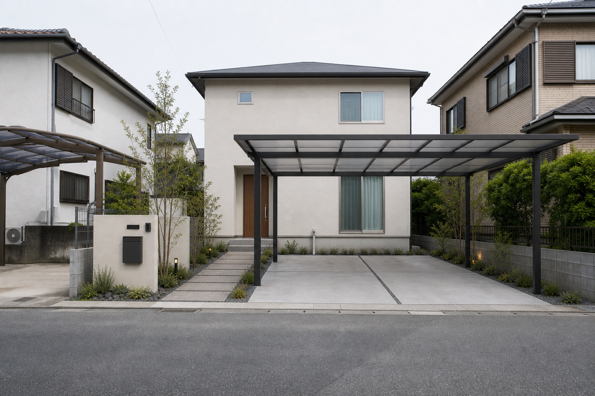
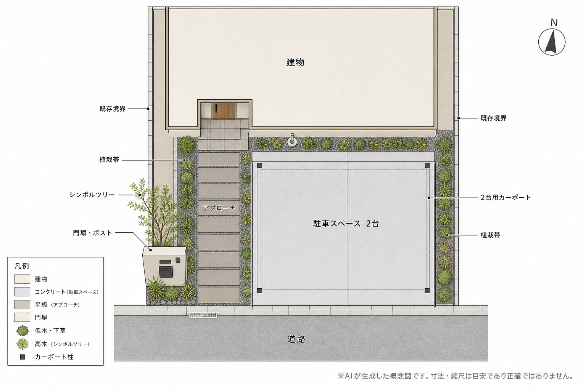

CURRENT
現況とご要望

1
前庭が未舗装のため、日常的に車を停めやすいスペースを整える必要があります。
2
道路から玄関までの歩行動線を、駐車動線と分けて安全で分かりやすくします。
3
門まわりと植栽を整え、シンプルな建物に調和する正面景観をつくります。

2台用カーポートと端正な玄関まわりを両立した、公開用の提案サンプルです。
前庭が未舗装のため、日常的に車を停めやすいスペースを整える必要があります。
道路から玄関までの歩行動線を、駐車動線と分けて安全で分かりやすくします。
門まわりと植栽を整え、シンプルな建物に調和する正面景観をつくります。
BEFORE
AFTER
スライダーを左右に動かすと、現況と完成イメージを比較できます。
※完成イメージはAIによる生成画像です。実際の仕上がり・色味・寸法とは異なる場合があります。
土間コンクリートとフラット屋根のカーポートで、雨天時にも使いやすい並列駐車スペースを整えます。
大判平板のアプローチを駐車スペースから分け、玄関まで迷わず歩ける安全な動線にします。
ポスト・表札付き門塀とシンボルツリー、控えめな植栽で、落ち着きのある玄関景観をつくります。

※AIが生成した概念図です。寸法・縮尺は目安であり、実測図・施工図ではありません。